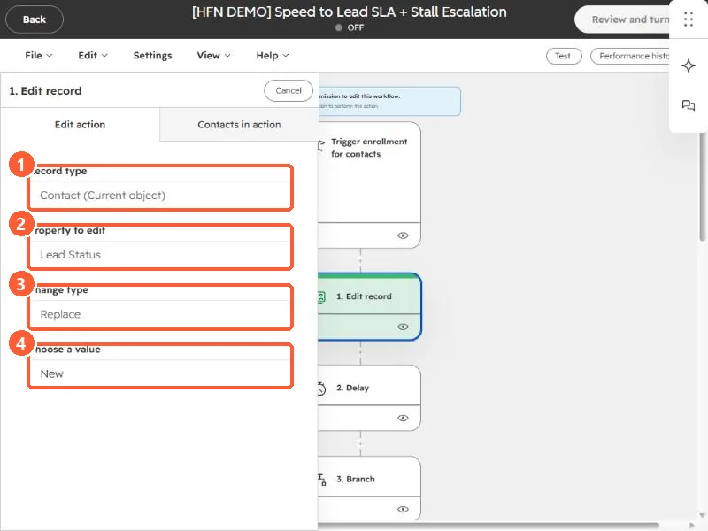

Short answer
The Edit record action has four fields: Record type (the current object or an associated one), Property to edit, Change type, and Choose a value. For a select property, the change types are Replace and Clear. For multiple checkbox properties they are Append, Replace, and Remove. To copy a value from another property, use a data token. In my demo, the first action replaces Lead Status with New.
1. The four fields
Click an Edit record action on the canvas of a workflow in Workflows. This is the first action of my speed-to-lead demo.


- Record type. The current object, here Contact (Current object), or an associated record such as the contacts on a deal. See set lifecycle stage from the deal.
- Property to edit. Here, Lead Status.
- Change type. Here, Replace.
- Choose a value. Here, New.
2. Change types
- Replace clears the previous values and sets only the one you chose.
- Clear removes all values from the property.
- Append and Remove are for multiple checkbox properties. Append adds your values to the existing ones, and Remove takes specific values out.
3. Copy from another property
Instead of a fixed value, click Choose data token to use another property's value, on the same record or an associated one. HubSpot's cautions: the source and target properties must be compatible, and if the source is empty, the target may stay empty.
4. Two traps
- Lifecycle stage only moves forward by default. To set an earlier value you have to clear it first. See the SQL article.
- Associated records can be many. Editing all associated contacts changes every one of them, so check how many a deal has.